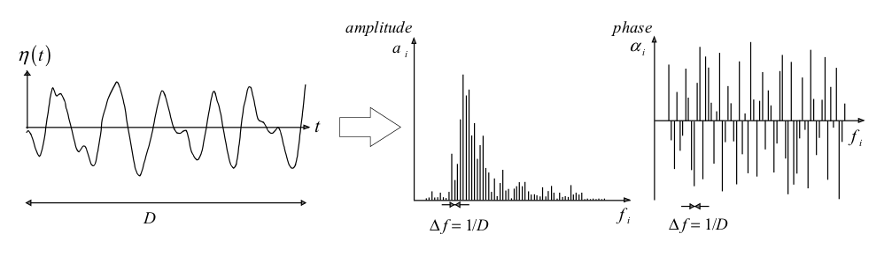
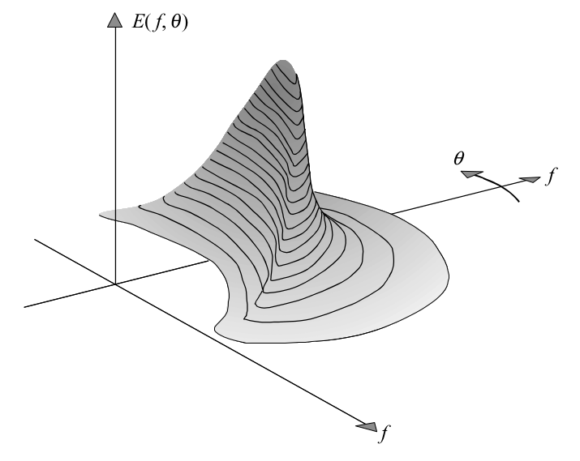
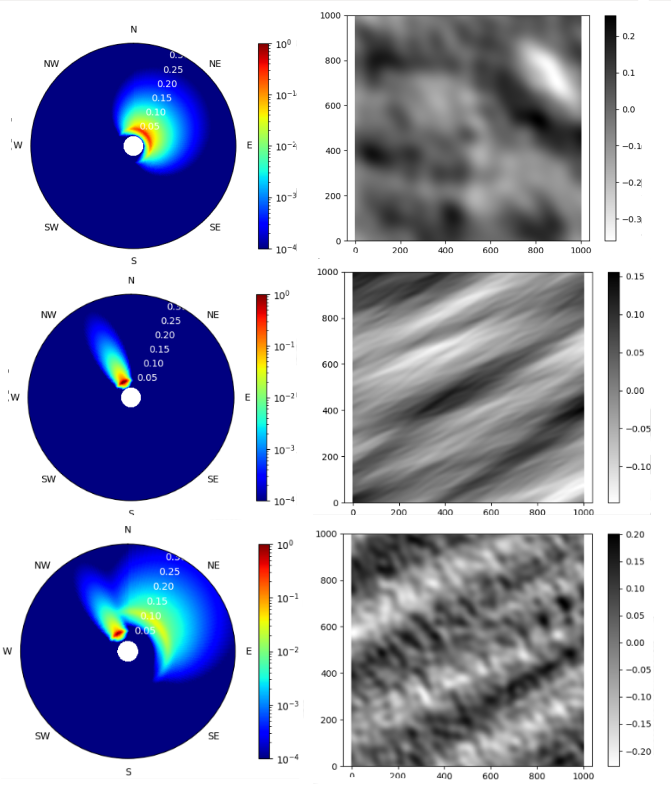

6. Spectrum and free surface reconstructions¶
The aim of describing ocean waves with a spectrum is not so much to describe in detail one observation of the sea surface (i.e., one time record), but rather to describe the sea surface as a stochastic process and to characterise all possible observations (time records) that could have been made under the conditions of the actual observation. An observation is thus formally treated as one realisation of a stochastic process. Here, we base this treatment on the random-phase/amplitude model (Holthuijsen, 2007), which leads to the wave spectrum, which is the most important form in which ocean waves are described. The basic concept of the wave spectrum is simple, but its many aspects make it seem rather complicated. To distinguish the essence from these additional aspects, consider first a wave record, the surface elevation \(\eta(t)\) at one location as a function of time, with duration \(D\), obtained at sea with a wave buoy or a wave pole (see Figure below).

We can exactly reproduce that record as the sum of a large number of harmonic wave components (a Fourier series):
where \(a_i\) and \(\alpha_i\) are the amplitude and phase, respectively, of each frequency \(f_i = i/D\) (i = 1, 2, 3, …; the frequency interval is therefore \(\Delta f = 1/D\)). With a Fourier analysis, we can determine the values of the amplitude and phase for each frequency and this would give us the amplitude and phase spectrum for this record. By substituting these computed amplitudes and phases into the previous equation, we exactly reproduce the record.
For most wave records, the phases turn out to have any value between \(0\) and \(2\pi\) without any preference for any one value. Since this is almost always the case in deep water (not for very steep waves), we will ignore the phase spectrum (just keep this uniform distribution in mind and apply that knowledge when called for).
The above one-dimensional variance density spectrum characterises the stationary, Gaussian surface elevation as a function of time (at one geographic location). To describe the actual, three-dimensional, moving waves, the horizontal dimension has to be added. To that end we expand the random phase-amplitude model by considering a harmonic wave that propagates in x, y-space, in direction \(\theta\) relative to the positive x-axis (we use \(w\) instead of \(f\) for the sake of brevity in the notation):
where the wave number \(k = 2\pi /L\) (where \(L\) is the wave length of the harmonic wave) and \(\theta\) is the direction of wave propagation (i.e., normal to the wave crest of each individual component). Analogously to the one-dimensional model, the corresponding three-dimensional random phase-amplitude model (in x, y and t-space) is the sum of a large number of such propagating harmonic waves:
where every individual wave component in this three-dimensional model has a random amplitude \(a_{i,j}\) (Rayleigh distributed) and a random phase \(\alpha_{i,j}\) (uniformly distributed). Furthermore, this two-dimensional random phase-amplitude model represents a Gaussian process that is stationary in time and homogeneous in x, y-space: a spatial pattern of chaotically moving surface elevations, seen as the sum of many wave components propagating with various amplitudes, phases and frequencies (or wave lengths) in various directions across the ocean surface. The effect is a realistic representation of random, short-crested waves.
The amplitude spectrum provides enough information to describe the sea-surface elevation realistically as a stationary, Gaussian process. However, for several reasons, it is more relevant to present the information in this spectrum in a different way: consider the variance \(E \left \{ \frac{1}{2} a_i^2 \right \}\) rather than the expectation of the amplitude \(E \left \{ a_i \right \}\). In other words, consider the variance spectrum instead of the amplitude spectrum. This seems trivial and also enough to characterise the sea-surface elevation. However, both the amplitude and the variance spectrum are based on discrete frequencies and directions, whereas Nature does not select such discrete quantities. All frequencies and directions are present at sea. The random phase-amplitude model needs therefore to be modified. This is done by distributing the variance \(E \left \{ \frac{1}{2} a_i^2 \right \}\) over the frequency interval \(\Delta f_i\) at frequency \(f_i\) and the direction interval \(\Delta \theta_i\) at direction \(\theta_i\). This spectrum is defined for all frequencies and directions, but it still varies discontinuously from one frequency or direction band to the next. A continuous version is obtained by having both widths bands approaching zero:
where the spectrum is calculated in terms of the frequency \(f\) and the direction \(\theta\). The variance density spectrum gives a complete description of the surface elevation of ocean waves in a statistical sense, provided that the surface elevation can be seen as a stationary, Gaussian process. This implies that all statistical characteristics of the wave field can be expressed in terms of this spectrum. The dimension and S.I. unit of the variance density \(E (f, \theta)\) follow directly from its definition: the dimension of the amplitude \(a\) is [length] and its S.I. unit is [m]; the dimension of the frequency band \(\Delta f\) is [time]\(^{-1}\) and its S.I. unit is [s\(^{-1}\)] or rather [Hz]; and the dimension of the direction \(\theta\) is [degree] and its S.I. unit is [radians]. The dimension of \(E (f, \theta)\) is therefore [length\(^{2}\) / (time \(\cdot\) degree)] and its unit is [m\(^{2}\) / (Hz \(\cdot\) radians)].

The standard way to calculate the spectrum has been presented, as once the free surface elevation is obtained, this variance density spectrum can be easily obtained, but in this work, the spectrum calculation has been performed in coast, where partitioned sea state variables (partitions will be explained below) and not free surface elevations exist. In this way, this spectrum reconstruction is performed using the variables propagated \(H_S\), \(T_P\), \(T_m\) and \(\theta_m\), where \(S(f, \theta) = S(f) \cdot D(\theta)\), being \(S(f)\) the spectral energy associated to the frequency and \(D(\theta)\) the spectral energy associated to the direction, is the total wave energy of the spectrum. These two energy variables grouped represent the total spectral energy associated to each frequency and direction in a sea state and are calculated using the equations below, which are also very well explained in (Kumar et al., 2017). First, the frequency distributed spectrum is calculated for each frequency as:
where \(\gamma\) gives an idea about the shape of the spectrum, being high for very disordered spectrums and lower for narrower and more powerful swells, and \(\alpha\) and \(\sigma\) are calculated in the next way:
being \(f_P = T_P^{-1}\) the peak frequency of the spectrum. For the directional spectrum, the spectral energy is also calculated for each direction:
where \(s = \frac{2}{\sigma_\theta^2} - 1\) is a shape parameter, \(\theta_S\) is the direction of the peak frequency and \(\int_{0}^{2\pi}D(\theta)d\theta=1\). Once these spectra are reconstructed we just have to calculate the aggregated parameters (as our surfing index will use bulk parameters), which can be done using some formulas that are explained in (Espejo Hermosa, 2011) and also in (Kumar et al., 2017), but in this case we will use a computational software called wavespectra.
This software uses those equations, but it is already validated by different people, and this accompanied with the results obtained in the validation step prove the methodology used. Notice that in this work, we have reconstructed the spectrums in each of the surfbreaks of interest, thus having a historical record of totally explained surfing conditions in those spots. Finally, just comment here the reduction performed in the data in this step as the calculation of the spectrums was a very expensive task at a computational level, so the data was reduced to just daily hours where the sport can be done, which was also one of the ideas that had to be taken into account in the study. This reduces the amount of data to more than a half, but ending up with a total number of observations of about 50000 for each surfbreak, so the subsequently explained neural network has been able to work correctly.

Spectrum and free surface reconstructions are shown. The axis are frequency [Hz], direction [rad] and energy [m\(^2\) / (Hz \(\cdot\) rad)] in the figures in the right and space [m] and elevation [m] in the other ones. As it can be seen, the different subplots show three different sea states. The first one (top of the image) represents a windsea, very spread in frequencies and directions that come from the NE, which is the normal case in the cantabric sea. The free surface associated to it shows a disturbed see state where mean waves appear, generating bad surfing conditions. Second, a very well defined swell coming from the NW is shown. In this case, waves seem clean and the conditions are perfect though. Lastly, in the bottom image, one sea state with a swell coming from the NW but also a windsea approching with NE direction is shown. These are the cases where intelligent surfers can catch good waves, but it is not that easy as in the previous case. Notice that the majority of the swells come always from the W-NW in the cantabric sea, as it is in this direction where the major portion of sea is encountered (“fetch”, this was previously mentioned). Finally, the surface reconstruction shows very different surfing sessions. In the left, a disperse and untidy summer day is shown and in the right, an ordered and epic session is waiting for us.
6.1. Wave partitions: Windseas and Swells¶
Last, having this spectrum explanation (refer to the figures above) it is possible to differentiate between the two main types of waves that a surfer can encounter when approaching the beach. If the spectrum is narrow and energetic, high wave heights form energetic spectrums, thus the train of waves reaching the shore can be considered a swell while broader and less energetic spectrums represent the existence of sea states called windseas, as these waves did not have the time enough to correctly abandon the location where they were formed and did not have time enough to get ordered both in frequencies and directions. These differences are also seen in the way the data from the wave reanalysis that will be explained below is obtained. These numerical models calculate different partitions that are present at the same time in a sea state, thus giving information about a windsea and different swells that can be reaching the shore at the same time. In our case (CSIRO wave reanalysis), one windsea will be always present if wind exists, and a total amount of three swells would be calculated.
To summarize, spectrums are the best possible option for the study of the wave climate in our days. They actually provide all the necessary information to define a sea state correctly and can be calculated by two different ways. First, based on the free measured surface and second, using the previously described equations and calculating the energy associated to each frequency and direction based on the sea states variables existent in that moment, which is the case we have followed, as the partitioned data we had in the surfbreaks had total, \(H_S\), \(T_P\), \(T_m\) and \(\theta_m\), (bulk is not used here as it is preferred for the total sea state) parameters for each of the different windsea and swell partitions.
# basic
import sys
import os
import os.path as op
# common
import numpy as np
import pandas as pd
import xarray as xr
import datetime
# plotting
import matplotlib.pyplot as plt
# warnings
import warnings
warnings.filterwarnings("ignore")
# custom
import spectra_functions as specfun
/home/javitausia/miniconda3/envs/spectra/lib/python3.8/site-packages/xarray/core/merge.py:10: FutureWarning: The Panel class is removed from pandas. Accessing it from the top-level namespace will also be removed in the next version
PANDAS_TYPES = (pd.Series, pd.DataFrame, pd.Panel)
p_data = op.join(os.getcwd(), 'data')
# -------------- EDIT THIS PART --------------------------------------------- #
name = 'pueblo' # used name in the RBF section
# --------------------------------------------------------------------------- #
partitions = pd.read_pickle(op.join(p_data, 'reconstructed',
'reconstructed_partitioned_'+name+'.pkl'))
print(partitions.info())
<class 'pandas.core.frame.DataFrame'>
DatetimeIndex: 360839 entries, 1979-01-01 01:00:00 to 2020-02-29 23:00:00
Freq: H
Data columns (total 17 columns):
# Column Non-Null Count Dtype
--- ------ -------------- -----
0 Hsea 172510 non-null float64
1 Tpsea 172510 non-null float64
2 Dirsea 172510 non-null float64
3 Sprsea 172510 non-null float64
4 Hswell1 321377 non-null float64
5 Tpswell1 321377 non-null float64
6 Dirswell1 321377 non-null float64
7 Sprswell1 321377 non-null float64
8 Hswell2 138960 non-null float64
9 Tpswell2 138960 non-null float64
10 Dirswell2 138960 non-null float64
11 Sprswell2 138960 non-null float64
12 Hswell3 46833 non-null float64
13 Tpswell3 46833 non-null float64
14 Dirswell3 46833 non-null float64
15 Sprswell3 46833 non-null float64
16 Tm_02 360839 non-null float64
dtypes: float64(17)
memory usage: 49.6 MB
None
# -------------- RUN THIS PART FOR DAILY HOURS ----------------------------- #
dates = np.arange(datetime.datetime(1979,1,1), datetime.datetime(2020,2,29),
datetime.timedelta(hours=1))
daylight_dates = []
for date in dates:
if int(str(date)[5:7])<4 or int(str(date)[5:7])>9:
if int(str(date)[11:13])>8 and int(str(date)[11:13])<18:
daylight_dates.append(date)
else:
if int(str(date)[11:13])>7 and int(str(date)[11:13])<20:
daylight_dates.append(date)
partitions = partitions.loc[daylight_dates][::3] # [::100] edit for tests
print(partitions.info())
# -------------------------------------------------------------------------- #
<class 'pandas.core.frame.DataFrame'>
DatetimeIndex: 52605 entries, 1979-01-01 09:00:00 to 2020-02-28 15:00:00
Data columns (total 17 columns):
# Column Non-Null Count Dtype
--- ------ -------------- -----
0 Hsea 25964 non-null float64
1 Tpsea 25964 non-null float64
2 Dirsea 25964 non-null float64
3 Sprsea 25964 non-null float64
4 Hswell1 46951 non-null float64
5 Tpswell1 46951 non-null float64
6 Dirswell1 46951 non-null float64
7 Sprswell1 46951 non-null float64
8 Hswell2 20211 non-null float64
9 Tpswell2 20211 non-null float64
10 Dirswell2 20211 non-null float64
11 Sprswell2 20211 non-null float64
12 Hswell3 6743 non-null float64
13 Tpswell3 6743 non-null float64
14 Dirswell3 6743 non-null float64
15 Sprswell3 6743 non-null float64
16 Tm_02 52605 non-null float64
dtypes: float64(17)
memory usage: 7.2 MB
None
print('Creating spectrums...')
print('--------------------------------------------')
# A maximum of 400 data can be spectrally analyzed at the same time
# Change test by test if wanted!!
timesteps = 50
timestep = int(len(partitions)/timesteps)
for ts in range(timesteps):
print('Group number {}...'.format(ts+1))
print('--------------------------------------------')
ts_spec = specfun.spectra(partitions.iloc[ts*timestep:(ts+1)*timestep],
gamma_values=False)
ts_spec = ts_spec.sum(dim='partition')
if ts==0:
specs = ts_spec
else:
specs = xr.concat([specs, ts_spec], dim='time')
specs.to_netcdf(op.join(p_data, 'spectra',
'spectra_'+name+'.nc'))
print('{} joined...'.format((ts+1)*timestep))
print('--------------------------------------------')
specs.to_netcdf(op.join(p_data, 'spectra',
'spectra_'+name+'.nc'))
print(specs)
<xarray.DataArray 'efth' (freq: 40, dir: 40, time: 52000)>
array([[[0.00000000e+000, 0.00000000e+000, 0.00000000e+000, ...,
0.00000000e+000, 0.00000000e+000, 0.00000000e+000],
[0.00000000e+000, 0.00000000e+000, 0.00000000e+000, ...,
0.00000000e+000, 0.00000000e+000, 0.00000000e+000],
[0.00000000e+000, 0.00000000e+000, 0.00000000e+000, ...,
0.00000000e+000, 0.00000000e+000, 0.00000000e+000],
...,
[0.00000000e+000, 0.00000000e+000, 0.00000000e+000, ...,
6.92374583e-016, 9.76450082e-015, 1.25922781e-010],
[0.00000000e+000, 0.00000000e+000, 0.00000000e+000, ...,
1.04774636e-018, 2.12425294e-017, 5.03031863e-013],
[0.00000000e+000, 0.00000000e+000, 0.00000000e+000, ...,
4.53501347e-022, 1.40861247e-020, 6.87066725e-016]],
[[0.00000000e+000, 0.00000000e+000, 0.00000000e+000, ...,
0.00000000e+000, 0.00000000e+000, 0.00000000e+000],
[0.00000000e+000, 0.00000000e+000, 0.00000000e+000, ...,
0.00000000e+000, 0.00000000e+000, 0.00000000e+000],
[0.00000000e+000, 0.00000000e+000, 0.00000000e+000, ...,
0.00000000e+000, 0.00000000e+000, 0.00000000e+000],
...
[1.56114352e-005, 2.65828559e-006, 1.95737313e-006, ...,
1.00076323e-011, 3.08298573e-011, 2.50109494e-010],
[4.33619152e-006, 6.23267744e-007, 3.84972177e-007, ...,
1.51442018e-014, 6.70699057e-014, 9.99128541e-013],
[9.58355069e-007, 1.13104958e-007, 5.68936916e-008, ...,
6.55494129e-018, 4.44746968e-017, 1.36466102e-015]],
[[0.00000000e+000, 0.00000000e+000, 0.00000000e+000, ...,
0.00000000e+000, 0.00000000e+000, 0.00000000e+000],
[0.00000000e+000, 0.00000000e+000, 0.00000000e+000, ...,
0.00000000e+000, 0.00000000e+000, 0.00000000e+000],
[0.00000000e+000, 0.00000000e+000, 0.00000000e+000, ...,
0.00000000e+000, 0.00000000e+000, 0.00000000e+000],
...,
[1.41101535e-005, 2.39733137e-006, 1.76176279e-006, ...,
8.90681362e-012, 2.74382286e-011, 2.22578593e-010],
[3.91919944e-006, 5.62083817e-007, 3.46499933e-007, ...,
1.34783711e-014, 5.96914668e-014, 8.89149073e-013],
[8.66194364e-007, 1.02001856e-007, 5.12080133e-008, ...,
5.83391140e-018, 3.95819833e-017, 1.21444542e-015]]])
Coordinates:
* freq (freq) float64 0.03333 0.04103 0.04872 ... 0.3179 0.3256 0.3333
* dir (dir) float64 270.0 260.7 251.4 242.1 ... 300.0 290.0 280.0 270.0
* time (time) datetime64[ns] 1979-01-01T09:00:00 ... 2020-02-23T09:00:00
# Plot the obtained spectra now
specs_plotted = specfun.plot_spectrum(specs, time_plots=[500,1000,1500,3000])
Plotting 4 out of 52000 spectrums...
Plotting specs: [500, 1000, 1500, 3000]
6.1.1. Have a look at the spectra_functions.py if things must be editted.¶
For the installation of wavespectra, the following two lines can be tried, but there are bugs that could not be corrected already.
In case the import cell below does not work when executing just the pip install lines, the following steps must be performed.
First, go to the wavespectra github in the following direction: https://github.com/wavespectra/wavespectra
Second, git clone the repository in documents:
git clone https://github.com/wavespectra/wavespectra.git
Third, create and environment:
# Create the environment
conda create --name myenv (myenv =? spectra)
Fourth, install cf-json for total functionality:
python -m pip install git+https://github.com/metocean/cf-json
Fifth, install the required libraries:
# Default install, miss some dependencies and functionality
pip install -r requirements/default.txt
# Also, for complete install
pip install -r requirements/extra.txt
Sixth, install wavespectra:
# Install with setup.py
python setup.py install
# Run pytest integration
python setup.py test
And now, move the notebook to the wavespectra initial root and run the cells again.
# Spectra module
from wavespectra.specarray import SpecArray
from wavespectra.specdataset import SpecDataset
p_data = op.join(os.getcwd(), 'data')
# -------------- EDIT THIS PART --------------------------------------------- #
name = 'pueblo' # used name in the SWAN section
# --------------------------------------------------------------------------- #
specs = xr.open_dataset(op.join(p_data, 'spectra',
'spectra_'+name+'.nc'))
print(specs.spec)
<SpecDataset>
Dimensions: (dir: 40, freq: 40, time: 52000)
Coordinates:
* freq (freq) float64 0.03333 0.04103 0.04872 ... 0.3179 0.3256 0.3333
* dir (dir) float64 270.0 260.7 251.4 242.1 ... 300.0 290.0 280.0 270.0
* time (time) datetime64[ns] 1979-01-01T09:00:00 ... 2020-02-23T09:00:00
Data variables:
efth (freq, dir, time) float64 ...
time = specs.time.values
hs = specs.spec.hs().values
tm = specs.spec.tm01().values
tp = specs.spec.tp().values
dm = specs.spec.dm().values
spr = specs.spec.dspr().values
save = pd.DataFrame(data={'Hs_Spec': hs,
'Tm_Spec': tm,
'Tp_Spec': tp,
'Dir_Spec': dm,
'Spr_Spec': spr}, index=time)
save
| Hs_Spec | Tm_Spec | Tp_Spec | Dir_Spec | Spr_Spec | |
|---|---|---|---|---|---|
| 1979-01-01 09:00:00 | 1.168786 | 4.744691 | 4.996442 | 0.422283 | 21.491687 |
| 1979-01-01 12:00:00 | 0.872718 | 4.978519 | 5.187206 | 3.415352 | 20.745879 |
| 1979-01-01 15:00:00 | 0.953891 | 5.062887 | 5.395302 | 5.745816 | 20.047816 |
| 1979-01-02 09:00:00 | 0.578712 | 5.364794 | 5.513106 | 33.734792 | 11.209998 |
| 1979-01-02 12:00:00 | 0.573095 | 5.375522 | 5.503848 | 28.525567 | 16.536728 |
| ... | ... | ... | ... | ... | ... |
| 2020-02-21 15:00:00 | 3.497328 | 12.386193 | 12.564064 | 351.749278 | 9.727657 |
| 2020-02-22 09:00:00 | 4.043174 | 13.476856 | 14.826919 | 351.308978 | 8.952616 |
| 2020-02-22 12:00:00 | 4.094893 | 13.473925 | 14.732478 | 350.859837 | 9.101114 |
| 2020-02-22 15:00:00 | 4.249573 | 13.781473 | 15.335543 | 350.235906 | 9.402158 |
| 2020-02-23 09:00:00 | 5.404118 | 14.811041 | 17.282427 | 349.835316 | 9.855161 |
52000 rows × 5 columns
save.info()
<class 'pandas.core.frame.DataFrame'>
DatetimeIndex: 52000 entries, 1979-01-01 09:00:00 to 2020-02-23 09:00:00
Data columns (total 5 columns):
# Column Non-Null Count Dtype
--- ------ -------------- -----
0 Hs_Spec 52000 non-null float64
1 Tm_Spec 51999 non-null float64
2 Tp_Spec 51998 non-null float64
3 Dir_Spec 52000 non-null float64
4 Spr_Spec 51999 non-null float64
dtypes: float64(5)
memory usage: 2.4 MB
save.to_csv(op.join(p_data, 'spectra', 'spectra_'+name+'.csv'))